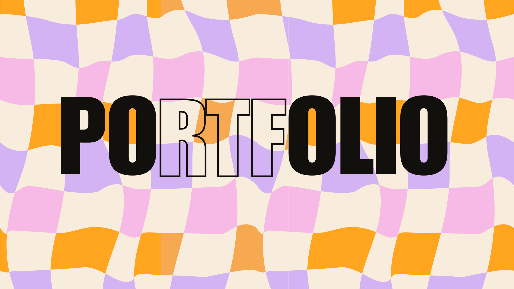
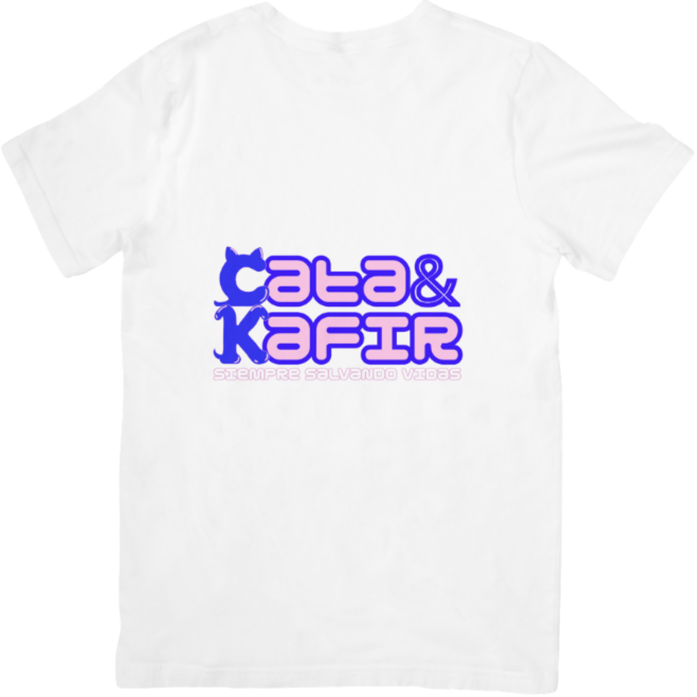
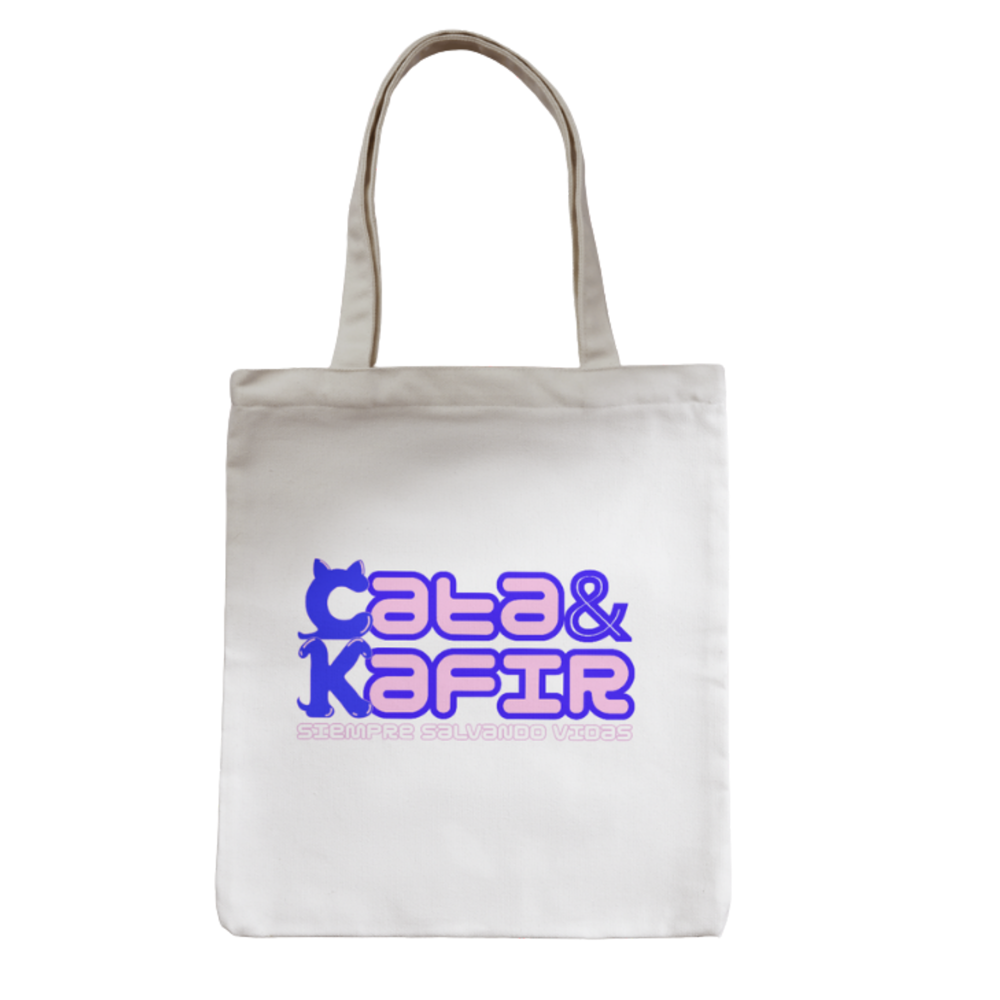
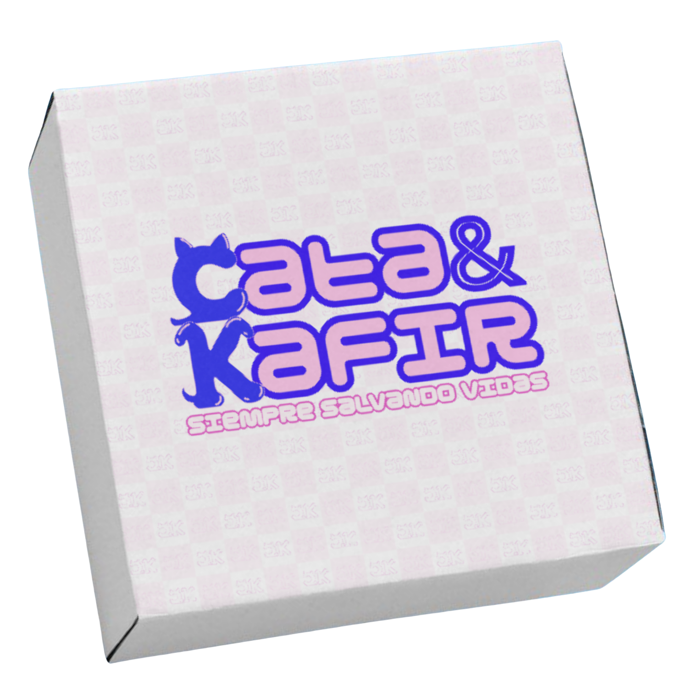

CLARO App
App móvil conceptual para organizar dinero y tiempo en un solo lugar. Un case study completo de investigación, arquitectura, UI Kit, prototipo y testing.
.svg)

Product & UX/UI Designer · Madrid
UX/UI Designer enfocada en producto digital. Trabajo desde la investigación hasta la interfaz final para crear experiencias simples, visuales y pensadas para reducir la carga mental del usuario.
Una selección breve para entrar al portfolio: producto digital, branding emocional y una marca completa con web. Cada proyecto enseña una parte distinta de mi forma de diseñar: ordenar, cuidar lo visual y pensar en personas reales.
App móvil conceptual para organizar dinero y tiempo en un solo lugar. Un case study completo de investigación, arquitectura, UI Kit, prototipo y testing.



Identidad visual para protectora de animales con logo CK, personajes, patrón, sistema gráfico y plantillas sociales.
Marca conceptual de matcha y café. Proyecto pensado para enseñar branding, dirección de arte, packaging y diseño web.
Espacio para piezas visuales, posters, sistemas gráficos y exploraciones de identidad. Una parte del portfolio pensada para mostrar criterio visual, composición y dirección de arte.
Estoy construyendo mi camino en UX/UI con especial interés por productos digitales claros, bien estructurados y visualmente actuales. Me interesa que la estética no sea solo apariencia, sino una herramienta para hacer que la experiencia sea más comprensible, útil y agradable.
Ordenar información para que se entienda rápido.
Interfaces limpias, actuales y humanas.
Decisiones enfocadas en utilidad real.
Disponible para oportunidades junior